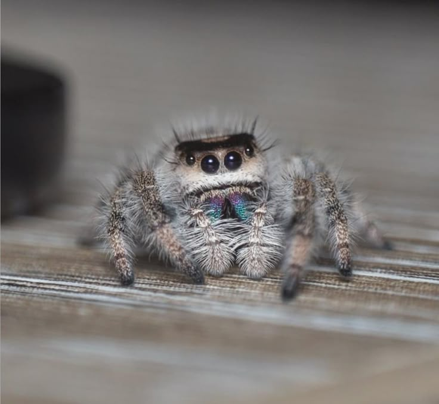
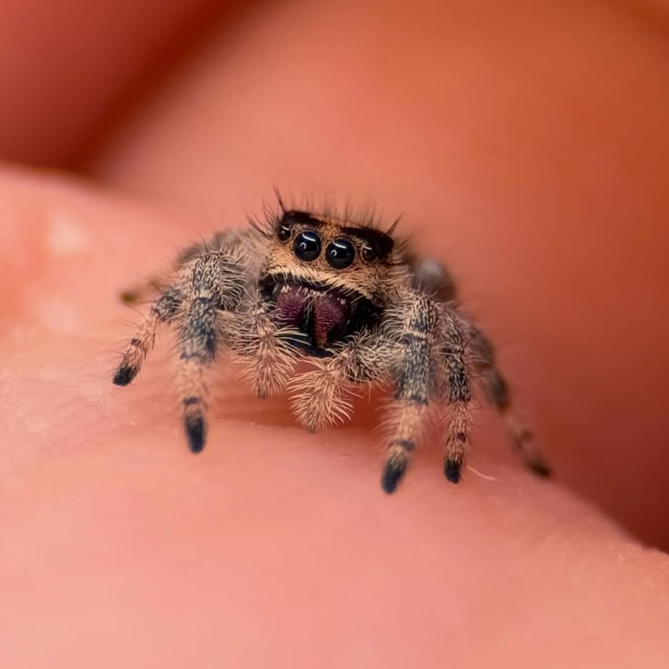
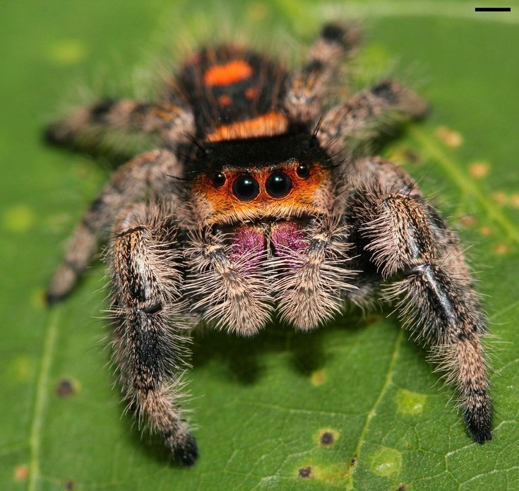

The main spiders that I will be talking about are: jumping spiders, tarantulas, wolf spiders, and maratus spiders.
I personally find them fascinating due to their unique behaviors and appearances.
I also think that most of them can be kept as pets with proper care. Most spiders can be very cute and interesting to observe, especially when they are hunting or building their webs. I also find it interesting how they can be both beneficial and harmful to humans, depending on the species.
Jumping spider tend to have small venomous fangs that can be poisonous but it doesn't affect humans that much.
The venomous that is "poisonous can only affect the human skin, it won't give you any real medical injury.
Jumping spiders tend to have a different appearance from other spiders. They are typically small and have excellent vision.
If they did end up biting you, it would likely be a minor irritation and not a serious medical concern.
First thing you need to do is research the specific care requirements for the species you are interested in.
After doing research, you need to set up an appropriate habitat. You can do this by buying a small enclosure, like a critter keeper or a modified plastic container.
Jumping spiders can molt up to 5-10 times in their lifetime. It depends on the species and the environmental conditions.
When you noticed a jumping spider preparing to molt, it's best to leave it alone and not disturb it. They will often stop movingg and might hang upside down from a surface
Ensure the enclosure has proper ventilation and humidity levels. This will help the spider molt successfully.
When they're done molting, you can resume normal handling. However, you need to be careful not to handle them immediately after molting, as their exoskeleton is soft and vulnerable.
| What food do they eat? |
|---|
| Flies |
| Mosquitoes |
| Gnats |
| Small Crickets |
| Caterpillars |
| Pros | Cons |
|---|---|
| Small size | Venomous (small amount) |
| Fascinating behavior | Can be difficult to care for |
| Relatively Low Maintenance | Short Lifespan |
| Small Space | Dietary Needs |


